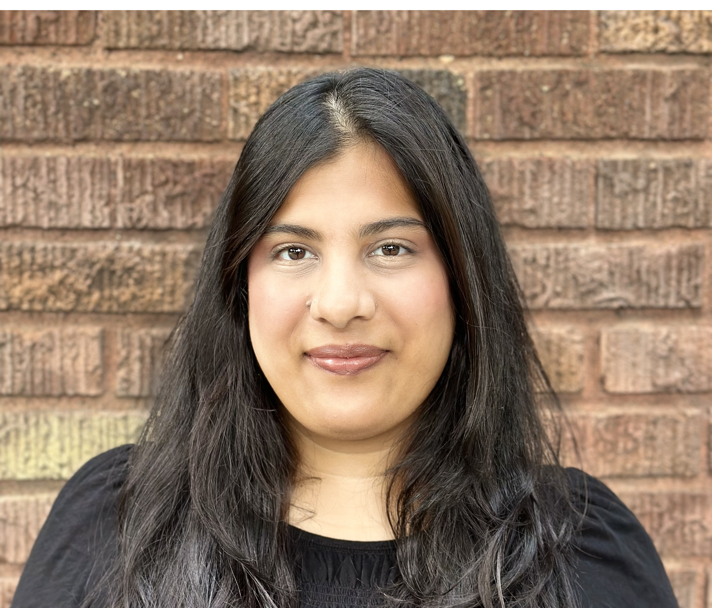

Welcome to My Webpage

I am an applied mathematician interested in applications of probabilistic graphical models to computational neuroscience. I am currently a Visiting Assistant Professor at Arkansas Tech University.
Contact: I may be reached via email at myousuf (at) atu (dot) edu for any inquiries.
Updates:
Oct. 2026: Selected to participate in NeuroBridges 2026 in Cluny, France, with a travel award.
Sep. 2026: Presenting a poster at the Data-driven Modeling, Simulation and Inference for Neurobiological Problems workshop.
Sep. 2026: Received a revise-and-resubmit decision for a manuscript submitted to Neural Computation.
Aug. 2026: Started as a Visiting Assistant Professor at Arkansas Tech University.
Jun. 2026: Successfully defended my PhD in Applied Mathematics
at the University of Arizona.